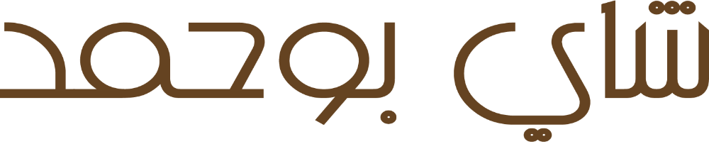
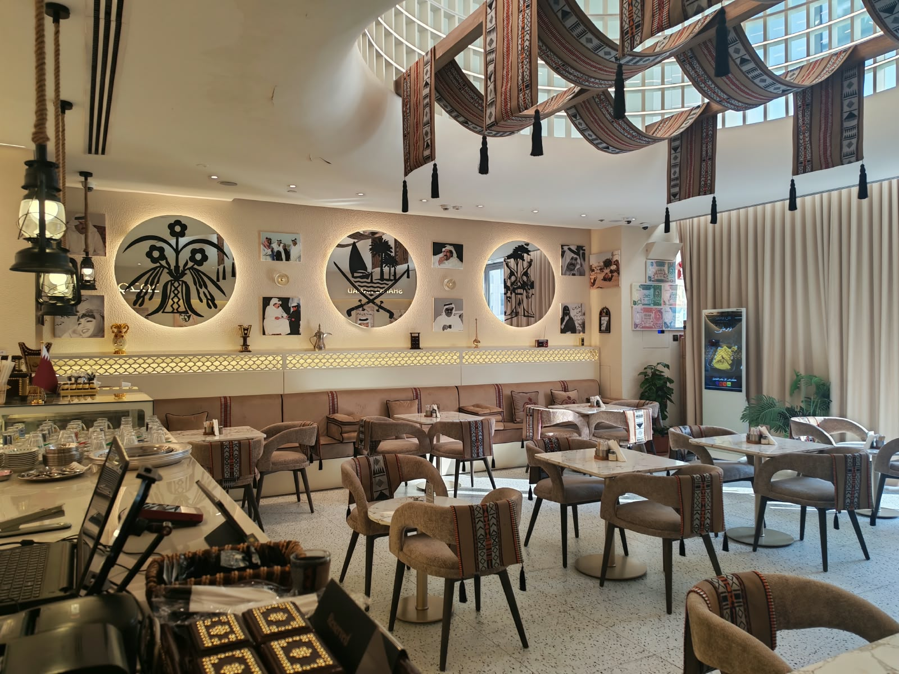
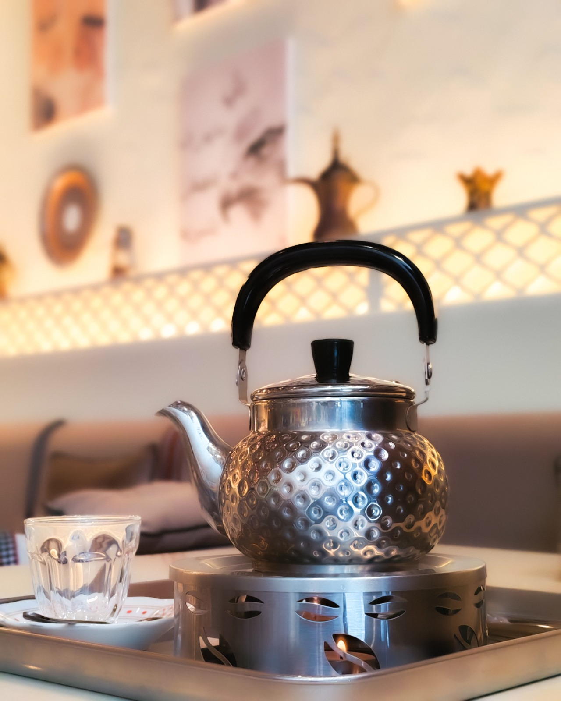
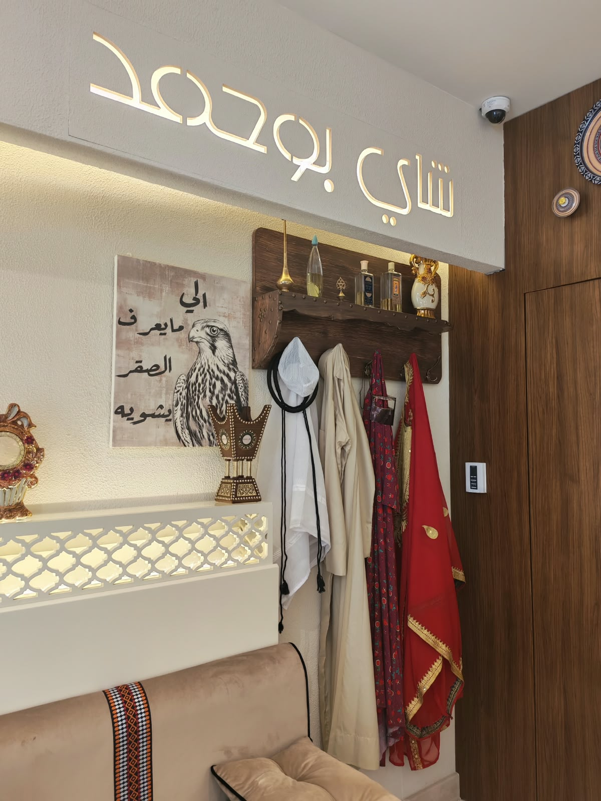
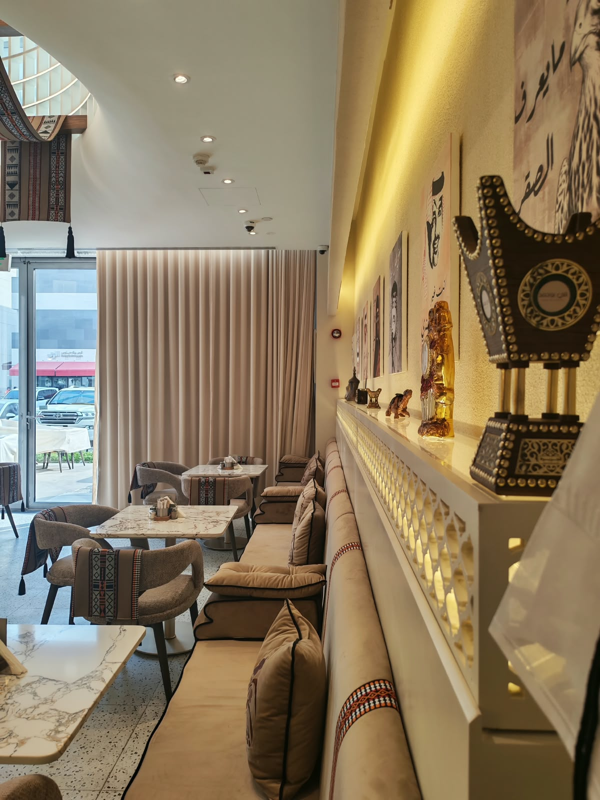
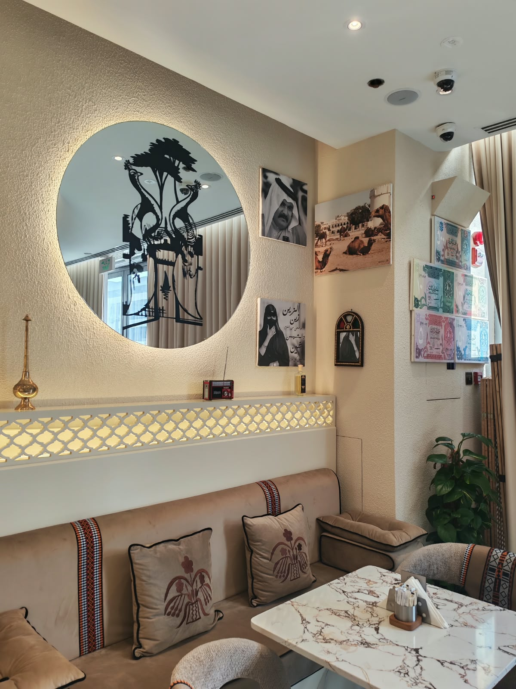
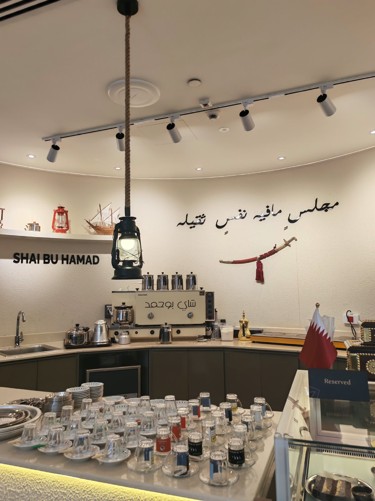
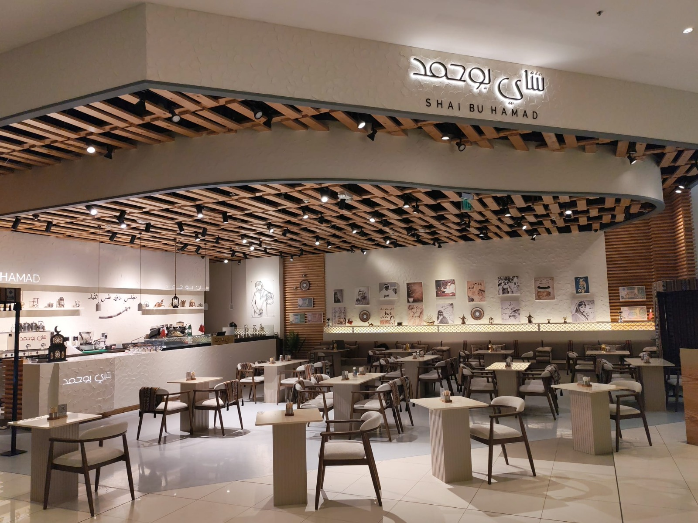
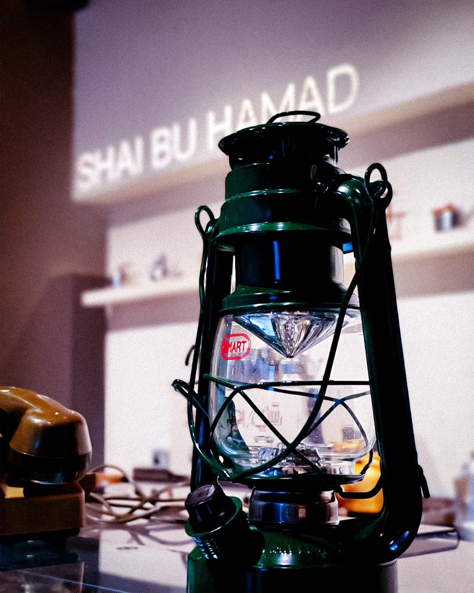

West Walk
الوعب — شارع السدر، الدوحة
- ساعات العمل
- في انتظار البيانات
- الهاتف
- في انتظار البيانات


زورنا
شاي بو حمد · الدوحة
مكتوبة على جدارنا، ومقصودة: ضيافة قطريّة تجلس فيها على مهلك — في West Walk و Gulf Mall.
القصّة
تأسّس شاي بو حمد ليقدّم مزيجًا رائعًا من عبق التراث الخليجي وأناقة الذوق القطري.
مانحًا رُوّاده مستوى رفيعًا من الخدمة وأشهى المأكولات التي تمزج بين أصالة المطبخ القطري ولمسات عصرية خليجية. يوفّر المطعم أجواءً دافئة وجلسات مريحة بتصاميم تعكس هذا التناغم الثقافي، ليصبح ملتقًى مميزًا لكل من يبحث عن تجربة طعام استثنائية في قلب قطر.


الي ما يعرف الصقر… يشويهمن لوحة الصقر — فرع West Walk
الأجواء



01
منذ لحظة وصولك ستغمرك أجواء من الأصالة الدافئة والترحاب الحار، ولمسات فنية تعكس عراقة التراث الخليجي وأناقة التصميم القطري.
02
جلسات مريحة بتصاميم تعكس التناغم الثقافي — للقاء حميم، أو لمساحة تُنجز فيها بعض أعمالك على مهل.
03
إضاءة هادئة وديكورات أنيقة تخلق أجواءً جذّابة، فتكون التجربة بصريّة قبل أن تكون تجربة طعام.
04
الأكواب مرصوفة على صحونها، والسموَر يحمل اسم البيت، والدلال جاهزة — كل شيء مكشوف أمامك، لأن الشاي عندنا يُحضَّر على عينك لا خلف باب.
جولة


اسحب للجانب
الرؤية
طموحنا أن نرسّخ مكانتنا كوجهة رائدة تحتفي بأصالة النكهة الخليجية ودفء الضيافة القطرية، مع التطلّع الدائم لتقديم تجارب طعام فريدة ومبتكرة تلبّي تطلّعات ضيوفنا المستقبلية.
مهمّتنا
نلتزم بأعلى معايير الجودة والتميّز في كل ما نقدّمه، ونتعامل مع كل ضيف باهتمام وتقدير ليحظى بتجربة طعام لا تُنسى، تترك أثرًا جميلًا في ذاكرته.
الفروع
الوعب — شارع السدر، الدوحة
الغرافة، الدوحة
الصور من الفرعين كما هما — تصوير المالك، أكتوبر 2026.